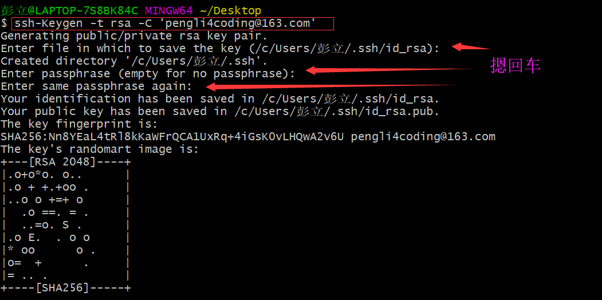
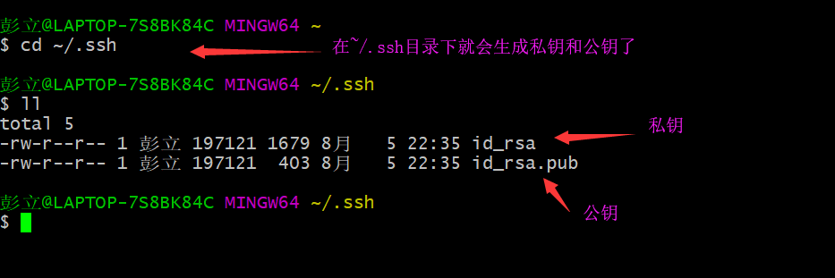
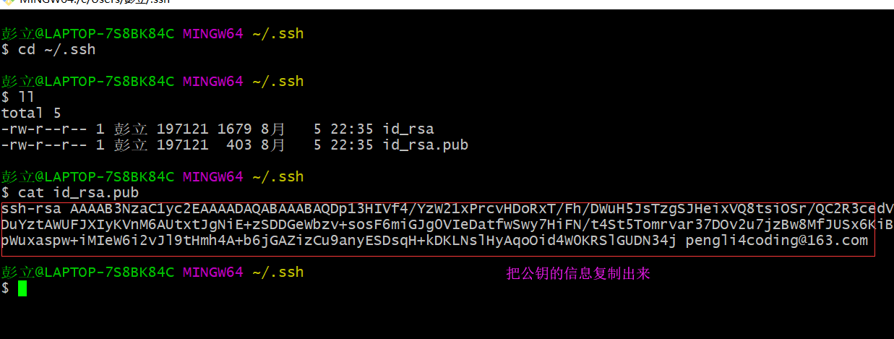
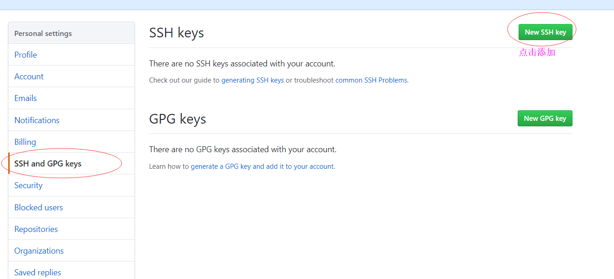
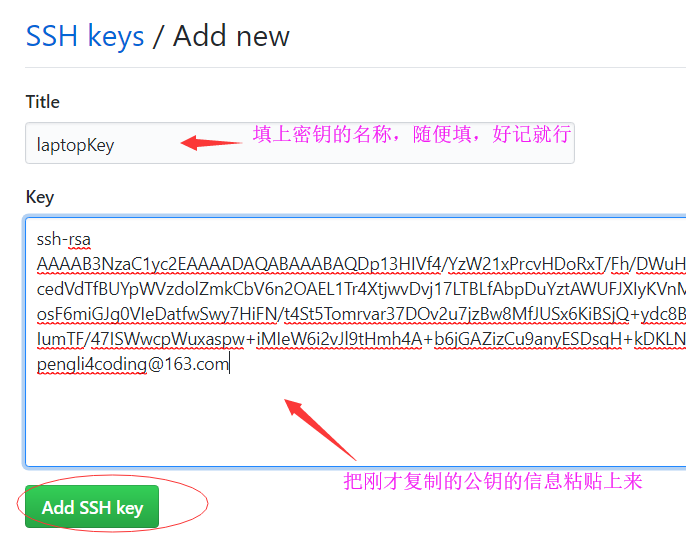
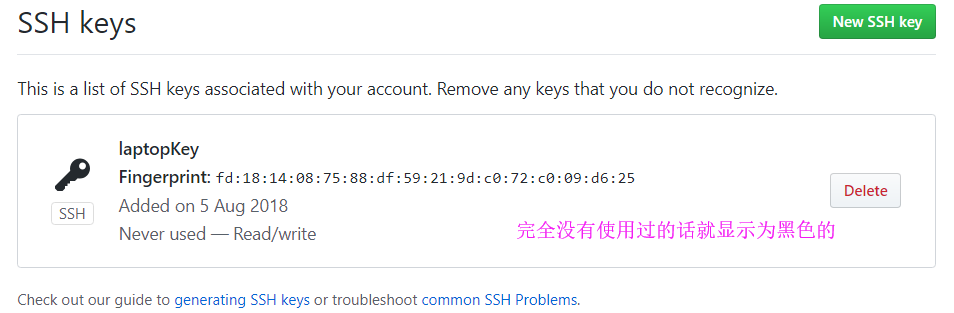
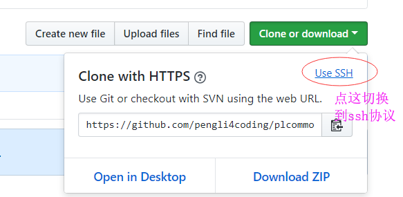
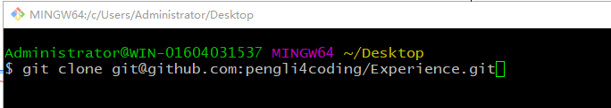

为什么要使用SSH传输协议
主要是因为使用SSH来进行文件数据传输的效率是最高的（相比Git中可以使用的其它三种数据传输协议http协议、Git协议、本地协议），SSH协议的传输效率高主要是因为它的文件压缩率是最高的。
如何使用SSH协议
第一步：生产RSA密钥对
在git bash中输入命令：ssh-Keygen -t rsa -C '提示信息可以乱填，可以填你在github上注册的邮箱地址'


第二步：在github网站上添加公钥




第三步：使用SSH协议，克隆仓库或者添加远程链接

